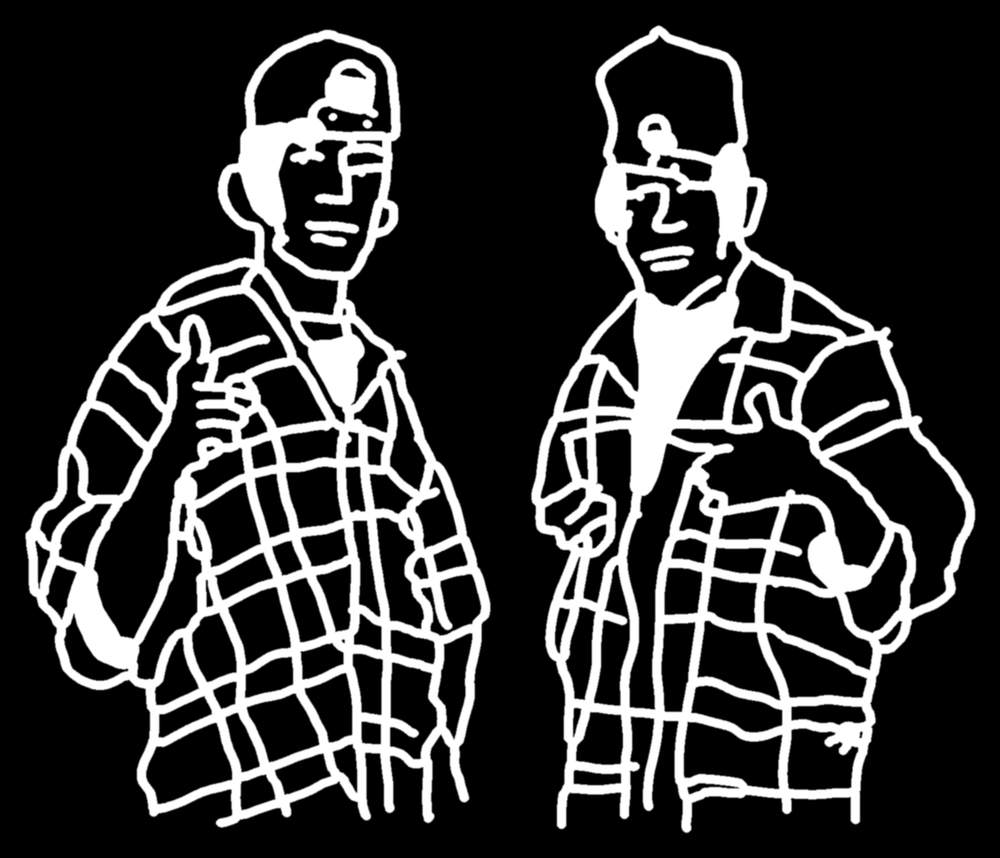
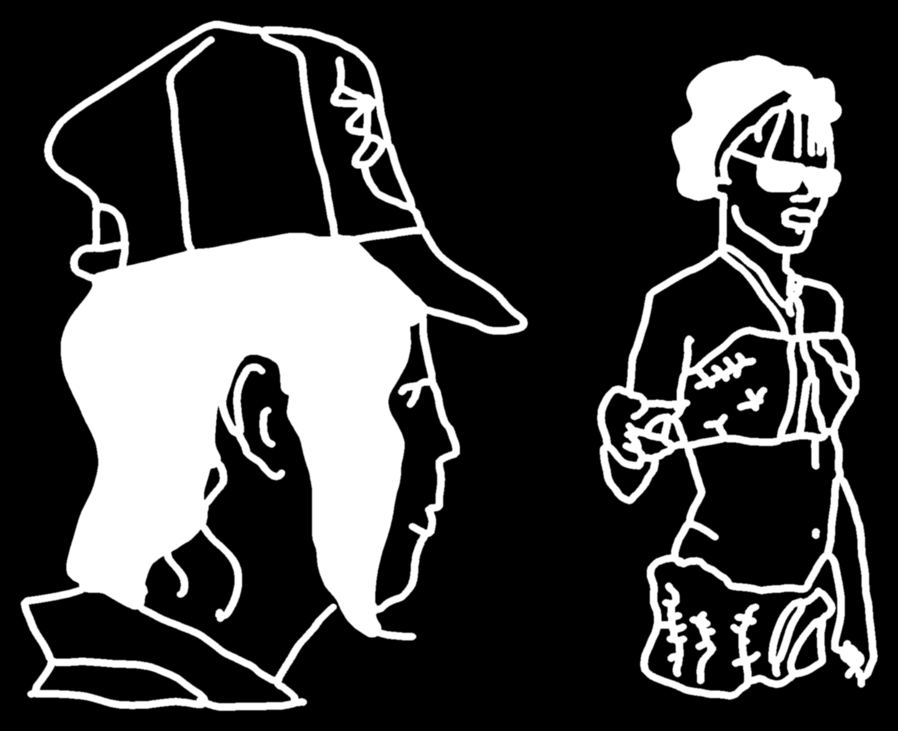

En las colonias populares de Monterrey, sobre todo en la Independencia, al pie del Cerro de la Campana, la cumbia y el vallenato llegaron en discos y se quedaron. Para mucha gente que había llegado del campo a trabajar en la ciudad, esas canciones de acordeón y nostalgia se volvieron propias. A Monterrey le dicen todavía "Colombia chiquita".
In Monterrey's working-class neighborhoods, above all Colonia Independencia at the foot of the Cerro de la Campana, cumbia and vallenato arrived on records and stayed. For many people who had come from the countryside to work in the city, those songs of accordion and longing became their own. Monterrey is still called "little Colombia".
Los sonideros llevaban la música a los bailes con sus discos y su equipo. Uno de los más queridos es Gabriel Dueñez, Sonido Dueñez. Cuenta la historia que una noche su equipo empezó a fallar y las cumbias sonaron más lentas. A la gente le encantó y empezó a pedirlas así. Dueñez convirtió el accidente en estilo y vendía sus casetes de cumbias rebajadas en el Puente del Papa.
Sonideros brought the music to the dances with their records and sound systems. One of the most beloved is Gabriel Dueñez, Sonido Dueñez. The story goes that one night his equipment started failing and the cumbias played slower. The crowd loved it and began asking for them that way. Dueñez turned the accident into a style and sold his cassettes of rebajada (slowed-down) cumbia on the Puente del Papa.
Celso Piña (1953–2019), El Rebelde del Acordeón, aprendió solo a tocar el acordeón de botones en la Independencia y con su Ronda Bogotá llevó la cumbia colombiana de Monterrey a todo el mundo, mezclándola sin miedo con lo que se le pusiera enfrente.
Celso Piña (1953–2019), El Rebelde del Acordeón, taught himself the button accordion in Colonia Independencia, and with his Ronda Bogotá he took Monterrey's Colombian cumbia around the world, fearlessly mixing it with whatever came his way.
De ahí salieron los cholombianos: los jóvenes de la colonia que hicieron de la cumbia una forma de vivir, con sus camisas holgadas, gorras, peinados con mechones largos y un paso de baile propio. Este firmware es un homenaje a todos ellos.
That is where the cholombianos came from: neighborhood kids who made cumbia a way of life, with loose shirts, caps, long-lock haircuts and a dance step of their own. This firmware is a tribute to all of them.

